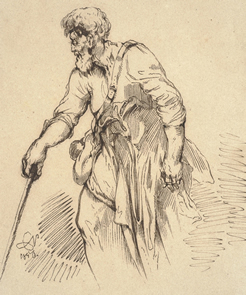
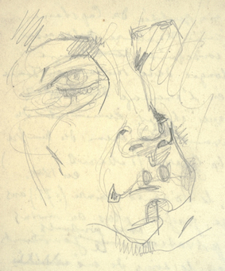
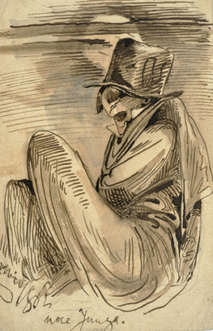
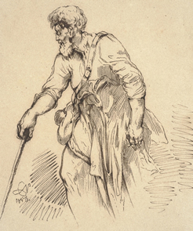
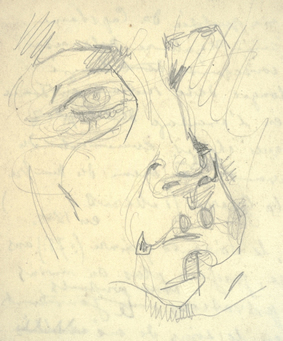
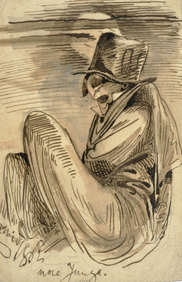

Drawings¶
Norwid's life was rich with artistic work.
His artistic range stretched to include drawings and paintings.
Biblioteka Narodowa open_in_new makes available digital versions of original manuscripts and drawings by Cyprian Norwid.

 







This work is licensed under a Creative Commons Attribution-ShareAlike 4.0 International License.